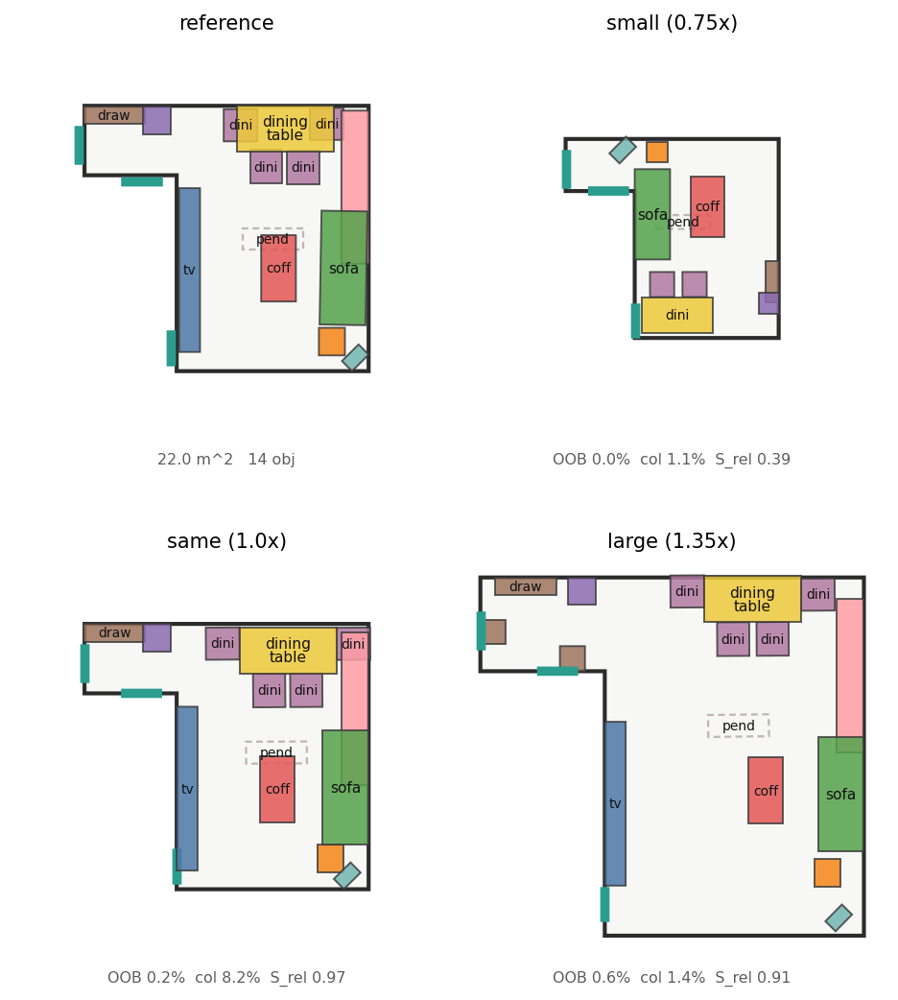
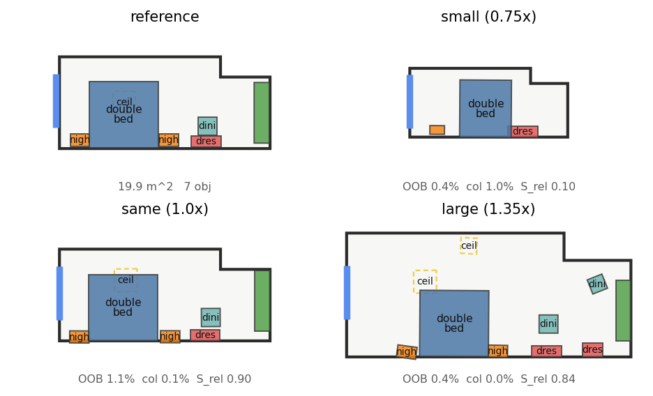

ReRoom · Shipped 做法
參考導向的 3D 室內場景 retargeting — 從資料生產到最終輸出的完整做法
問題:給一份使用者喜歡的房間設計(reference)+ 一個尺寸 / 長寬比 / 形狀可能完全不同的目標房間邊界 P_t,自動把設計搬過去 — 保留參考的物件組成、空間關係、motif 與風格,同時讓佈局符合新房間的幾何(貼牆、不出界、不碰撞)。核心假設(PDF §4):設計的 identity 在於關係而非絕對座標。
Shipped 全景:整條系統分兩半。離線把真實 3D-FRONT 場景反向製造成因果訓練對,訓出 flow 模型 flow_bfresh;線上是一個極簡的 單網路 + 單步投影:把 reference 投影進目標房 → 單一 DiT 整流流取樣 → 一道確定性的幾何規則化投影(Regularity)→ 輸出。消融證明 DiT 本體已學會 99% 的拓撲(\(S_\text{rel}=0.74\)),後接的 1-step 投影只做正交/貼牆對齊,不改拓撲 — 因此跟 LEGO-Net 一樣輕(單網路 + 單步幾何投影),不需 test-time 的多步能量優化。
一、全景流程圖
資料生產 & 訓練(離線)
推理管線(線上)— 單網路 + 單步投影
主力方法只有兩個核心步驟:單一 DiT(整流流) + 單步確定性幾何投影(Regularity) — 跟 LEGO-Net 一樣輕盈。25 步 Adam polish 已移除(消融證明視覺無損,見 §六)。
二、統一符號與參數表
全站符號與所有 shipped 超參數的單一真相來源。下方各節不再重複數值。
符號
| 符號 | 意義 | 單位 / 範圍 |
|---|---|---|
| \(N\) | 物件數 | – |
| \(x_i=(u_i,v_i)\) | 物件 \(i\) 在房間 MRR-normalized 座標 | \([-1,1]\) |
| \(\theta_i\) | 物件 \(i\) yaw;state 存 \((\cos\theta,\sin\theta)\) | 弧度 |
| \(s_i\in\mathbb{R}^2\) | footprint 半尺寸(local) | 米 |
| \(P_t\) | 目標房邊界,32 取樣點 × 6 維 | \((u,v,u h_1,v h_2,n_u,n_v)\) |
| \(G\) | 意圖圖:節點=物件,邊帶 \(\alpha_{ij}\)+關係型 | – |
| \(\alpha_{ij}\) | 關係彈性:0=彈性,1=剛性 | \([0,1]\) |
| \(a_i\) | reference wall affinity(靠牆程度) | \([0,1]\) |
| \(\hat n_i,\hat t_i\) | 物件 \(i\) 在其牆的 inward normal / 切向 | 單位向量 |
| \(\tau\) | flow matching 時間 | \([0,1]\) |
| \(\hat x_1\) | flow 對終點預測 \(=x_\tau+(1-\tau)v_\theta\) | 同 \(x\) |
| \(\rho\) | 房間面積比 \(=\text{Area}_{P_t}/\text{Area}_\text{ref}\) | – |
Shipped 超參數(全部)
| 參數 | 值 | 作用 |
|---|---|---|
| 資料生產(HybridPairs,xscene.py) | ||
| forward_frac | 1.0 | shipped 用純前向變形因果對(cross-pairing 為驗證過的替代 30% 選項) |
| deform levels | 1–5 | uniform / aspect / slant / corner-cut / concave |
| l1_range | [0.6, 1.7] | uniform_scale 線性倍率(面積比 ≈平方) |
| 面積比守門 | [0.5, 2.0] | target/source 超範圍 → 重採樣 |
| footprint 溢出守門 | ≤ 15% | 物件 footprint 出牆比例上限 |
| 碰撞守門 | ≤ 來源基線 | 變形不得引入超過真實來源的碰撞 |
| cross Jaccard / Δθ | >0.6 / ≤30° | (cross-pairing 用)類別相似度 + 錨點朝向一致 |
| 模型 & 訓練(flow_bfresh,train.py) | ||
| DiT depth / d_model / heads | 12 / 384 / 8 | ≈34M 參數 transformer |
| epochs / lr / batch / wd | 180 / 3e-4 / 192 / 3e-4 | fresh(無 warm-start) |
| prior_x0 / prior_noise | True / 0.3 | Module 1:x₀=ref 投影 + 噪聲 |
| geo_bias / wall_tokens | True / True | Module 2:dense pairwise + 牆 token |
| parent_relative | True | Step 2:child 相對 parent 度量偏移 |
| REL_SCALE | 3.0 m | child 偏移的度量正規化常數 |
| child_loss_weight λ_child | 10.0 | ≈1/0.3²,補償 child 局部尺度梯度 |
| rel_loss / wall_align / wall_aux | 4.0 / 1.0 / 3.0 | Module 4 motif 剛性 + 貼牆對齊 aux |
| 推理:Flow 取樣(sample.py) | ||
| k 候選 / ODE 步數 | 16 / 50 | 取樣 k 個佈局,Euler 積分 |
| guidance ramp | \(\max(0,(\tau-0.5)/0.5)\) | guidance 只在後半 trajectory 生效 |
| 推理:Polish(optimizer.py) — 選用,shipped 預設關閉 | ||
| restarts / polish_steps / lr | 24 / 25 / 0.02 | Adam,freeze_yaw |
| polish_anchor | 100 | 錨定到 flow 取樣位置 |
| 二階段 phase1_frac | 0.65(T₁=16 步) | 前 65% 弱化 col/tangent、強化 wall |
| phase1 col / tan / wall | ×0.15 / ×0.10 / ×3.0 | Phase 1 縮放 |
| 異方性 w_tan / w_norm / w_free | 100 / 8 / 100 | 切向強 / 法線單向 / 自由對稱 |
| wall-pull λ_w(ρ≤1 / ρ>1) | 2.5 / 1.5 | 縮房推力大、放大房避免撞飛 |
| δ_flush | 6 cm | 貼牆容忍 |
| 推理:能量權重 \(w_k\)(energy.py) — 選用 polish 用 | ||
| rel / bound / col / clear / func / style | 1 / 40 / 30 / 4 / 3 / 1 | §8 六項;edit 未接(=0) |
| clearance C / bound 容忍 | 25 cm / 12 cm | 跨 motif 走道 / 出界容忍 |
| 推理:單步幾何投影 Π(Step 1,regularity.py) — shipped 核心 | ||
| regularity_snap | True | 槽位 + 貼牆 flush + Manhattan |
| Manhattan 容差 | 22° | 朝向 snap 到最近牆軸的門檻 |
三、資料生產
沒有現成的「reference 房 → retargeted 房」配對語料,所以 shipped 用反向製造因果對:拿一份真實 3D-FRONT 場景 S_tgt 當 GT,倒推出一個 pseudo-reference S_ref,再讓模型學「\((S_\text{ref}, P_t)\to S_\text{tgt}\)」。這保證每個訓練對有 100% 因果關係。
1. 前向變形因果對(shipped 主路徑)
- 取真實場景 S_tgt 及其房間多邊形。
- 對房間多邊形做參數化變形(5 個 level)得 P_ref:等比縮放 / 長寬比 / 斜牆 / 切角 L 型 / 凹型。面積比落在守門範圍。
- 把 S_tgt 的家具逆映射回 P_ref 成 S_ref — 關鍵:每個 motif 當一個剛體整組搬(head 用仿射,成員保留相對 offset 與朝向),絕不用逐物件仿射把 motif 內部間距拉伸。
- 成果:合法因果對 \((S_\text{ref}, P_t)\to S_\text{tgt}\)。模型學到「房間長寬比變時,motif 整體平移、非貼牆件等比縮放」的正確遷移物理。

2. 四道品質守門(渲染即發現、逐一修掉)
直接把 dataset 抽樣渲染,發現並修掉四個資料品質問題:
| 問題 | 守門 / 修法 | 修正前 → 後 |
|---|---|---|
| 面積比爆量(切角生出 4× 大房) | 面積比重採樣 [0.5, 2.0] | >2.0× 比例 10.3% → 0.0% |
| 退化崩塌(motif 投影到邊界同點) | _gt_oob_frac 出界守門 | OOB 最大 100% → 14.3% |
| 物件戳出牆(footprint 出牆) | 剛體共享平移往內推 | >15% 出牆 25.1% → 1.1% |
| 碰撞(縮房把家具擠一起) | 不得引入超過來源基線的碰撞 | 真碰撞/場景 2.81 → 1.73(< 來源 1.93) |

碰撞審計:哪些重疊是合法的
「重疊」不等於「碰撞」。用 optimizer / guidance 內建同一套規則分三類 — 真碰撞(footprint 相交且 z 重疊且非可疊放對)、可疊放(NESTABLE_PAIRS:餐椅↔桌、床頭櫃↔床…)、z 分離(檯燈在桌上、地毯在家具下)。殘留真碰撞是從真實 3D-FRONT 繼承的(真實資料本身即有重疊),我方變形不再新增。

3. 跨場景配對(驗證過的替代來源)
前向變形的 reference 是「造」出來的。另一條路是用兩間真實房間:同房型、類別 Jaccard > 0.6、核心錨點朝向差 ≤ 30°,以 S_ref 為輸入、S_tgt 邊界為 P_t、S_tgt 真實佈局為 GT;物件用空間 Cost Matrix + 匈牙利對齊(位移最短、不交叉)。覆蓋率 98.6%、配對率 76%。shipped bfresh 選用純前向變形(因果最乾淨),cross-pairing 作為已驗證的補充來源保留。

四、模型與訓練:flow_bfresh
1. Flow matching 基礎
State \(x_1\in\mathbb{R}^{N\times4}\):每物件 \((u,v,\cos\theta,\sin\theta)\)。訓練以因果對的 GT 為 \(x_1\):
$$x_\tau=(1-\tau)\,x_0+\tau\,x_1,\qquad v_\text{target}=x_1-x_0,\qquad \mathcal{L}_\text{fm}=\big\|v_\theta(x_\tau,\tau,G,P_t)-v_\text{target}\big\|^2$$取樣:50 步 Euler,\(x_{\tau+d\tau}=x_\tau+d\tau\,v_\theta\)。\(G\) 進 attention bias,\(P_t\) 為 32 邊界點。
2. Module 1 — Informative Prior(x₀ 不是噪聲)shipped
診斷:flow 從高斯噪聲起步 = 在目標房盲猜,optimizer/polish 因此主導輸出。改為從 reference 投影起步,flow 只負責整流:
$$x_0 = \mathcal{T}(S_\text{ref}, P_t) + \sigma\,\epsilon,\qquad \sigma = 0.3$$\(\mathcal{T}\) 即 reference 佈局在目標房 normalized 座標系的仿射投影(cond 已帶的 ref_state)。train / sample / validate 三處一致,flag 存進 checkpoint 自動對齊。
3. Module 2 — 全對相對幾何 attentionshipped
- dense pairwise bias:從當前 state 算所有物件對的 \((\Delta u,\Delta v,\|\Delta p\|,\Delta\cos,\Delta\sin)\),MLP → 每 head 的 attention bias。
- 牆 token cross-attention(WallCrossAttention):32 個邊界點成為牆 token,每個家具對所有牆 token 做 cross-attention,帶 object→wall 邊 bias(相對位移、垂直距離、法線失準度)— 讓模型自己挑「該貼哪面牆」。
4. Step 2 — Parent-Relative Flow(motif 從源頭不散架)shipped
motif child(餐椅、床頭櫃)不預測全域座標,而是預測相對 parent 的度量偏移:
$$x_\text{child} = \mathcal{T}_\text{parent}\cdot\big(\text{offset}\big),\qquad \text{offset 為度量單位 / REL\_SCALE}$$因為偏移是度量、與房間尺度無關,房間放大 1.35× 時偏移不縮 → 椅子從 flow 提案階段就黏住桌子。三條訓練規範缺一不可(否則欠收斂):
- 完全 fresh、180 epoch(warm-start 進相對空間 = 壞初始化,曾試 flow_s2 val 0.53 全退)。
- 異質節點 Type-ID:輸入層標 0=global anchor / 1=relative child,並把 child 從牆面 cross-attention 遮罩掉(child 只依賴 parent,不該被外牆拉扯)。
- child loss 尺度補償 \(\lambda_\text{child}=10\approx1/0.3^2\):child 相對速度在桌身局部尺度,否則梯度被 parent 的房間尺度淹沒。
5. Module 4 — 幾何正則損失
總損失 \(\mathcal{L}=\mathcal{L}_\text{fm}+4\,\mathcal{L}_\text{rel}+1\,\mathcal{L}_\text{wall-align}+3\,\mathcal{L}_\text{wall-aux}\)。\(\mathcal{L}_\text{rel}\) 懲罰 motif 內部距離拉伸;\(\mathcal{L}_\text{wall-align}\) 讓貼牆件朝向對齊最近牆法線。

五、推理管線(單網路 + 單步投影)
shipped 主力方法只有兩個核心步驟(② 單一 DiT + ③ 單步投影);其餘為輕量前後處理。
① Summarise + Substitution
房間變小先刪 motif,再從 asset bank 換成塞得下的較小同風格家具(在 flow 之前,避免硬塞被 collision 推散)。Anchor 保護:每房型核心家具(客廳 sofa、臥室 bed…)永不刪 — 塞不下就交給 substitution 換小版本。
② 單一 DiT 整流流 + In-sampling Guidance 核心
從 \(x_0=\mathcal{T}(S_\text{ref},P_t)+\sigma\epsilon\) 起步(informative prior),ODE 取樣,取 k=16 候選。每步估 \(\hat x_1=x_\tau+(1-\tau)v_\theta\),對可行性打分並反傳(guidance):
$$\Phi(\hat x_1)=w_\text{bound}E_\text{bound}+w_\text{col}E_\text{col}^\text{nest-exempt}+w_\text{clear}E_\text{clear}+w_\text{wp}E_\text{wall-pull}$$ $$x\leftarrow x-d\tau\cdot\text{ramp}(\tau)\cdot\nabla_x\Phi,\qquad \text{ramp}(\tau)=\max(0,(\tau-0.5)/0.5)$$parent-relative 模型下,積分在相對空間進行,guidance 時解碼成世界座標算梯度、再編碼回去(decode → nudge → encode,§七 命題 2)。DiT 本體即輸出正確拓撲(raw \(S_\text{rel}=0.74\))與近乎無碰撞(raw \(R_\text{col}=2.4\%\))的佈局。
③ 單步幾何投影 Π(Regularity)核心
連續空間低 loss 容忍 5–10 cm 非正交偏移,但人眼對「正交、貼合、成套」極敏感。所以接一道確定性、無梯度的單步投影(拓撲保持,§七 命題 3):
- 槽位吸附:餐椅 / 書桌椅吸附最近桌邊,朝向 snap 到桌子的軸(平行桌邊,非朝桌心對角)。
- 貼牆 flush + 法線朝向:掛畫 / 衣櫃 / 電視櫃 / 床 / 沙發背面投影到最近牆線、朝向設為牆內法線。
- Manhattan 正交 snap:茶几 / 餐桌 / 邊桌朝向 snap 到最近牆軸(容差 22°),消除 3–15° 傾斜。
這一步取代了原本 25 步 Adam polish — 消融證明視覺無損(§六),整條 pipeline 因此變成單網路 + 單步投影。
④ Population + Ranking
房間變大時依 co-occurrence 新增家具(守門「加入後 feasibility 成本不變」);最後對 k=16 候選用 §8 能量 \(E(Y)\) 選最佳者輸出。
選用:多步 Polish(非 shipped,可選精修)
另有一個 25 步 Adam 能量下降版本(對 §8 六能量 \(w_k\)=1/40/30/4/3/1 + anchor 損失),疊異方性 anchor(\(w_\text{tan}=100\) 切向強、\(w_\text{norm}=8\) 法線單向、\(w_\text{free}=100\))、親子相對 anchor、二階段排程(前 65% 弱化 col/tangent、強化 wall)、連續牆 SDF wall-pull(\(\lambda_w=2.5/1.5\))。它把 \(R_\text{col}\) 從 1.8% 再降到 1.2%,但視覺與拓撲和單步投影無異,故 shipped 預設關閉,僅作為需要極致無碰撞時的選用精修。
六、結果
三份不同的 reference,各自放入 0.75× / 1.0× / 1.35× 房間 — shipped 主力方法 單一 DiT(flow_bfresh)+ 單步幾何投影,無 25 步 polish。每張左上為 reference,其餘三格為三種尺寸輸出。



1. 固定測試集 · PDF §15 指標
從 held-out test split 凍結固定測試集(outputs/fixed_testset.json):12 組跨場景 cross pair(真實人類 GT)+ 4 個 three-sizes。量尺選擇是關鍵:PDF §4 明言「Design Intent 不是絕對座標」,跨場景本就多解,所以主標的是關係型指標(S_rel / S_motif / R_OOB / R_col),位置 MAE 僅參考。
2. ReRoom 2.0 逐步驗證(raw+polish,無 snap)
| 指標 | bnd200 baseline | r2 M1 | r2m2 M1+輕M2 | r2m2full M1+完整M2 | bfresh +Step2 shipped |
|---|---|---|---|---|---|
| S_rel 關係保持 | 0.903 | 0.875 | 0.900 | 0.908 | 0.905 |
| S_motif | 0.989 | 0.978 | 0.989 | 0.989 | 0.989 |
| R_col 碰撞 | 5.1% | 3.0% | 3.3% | 3.4% | 3.8% |
| 0.75× float | 8.8 | 9.8 | 9.5 | 8.5 | 7.8 cm |
| 0.75× motif_pass | 50% | – | 50% | 50% | 83% |
| 1.00× snap | 83% | 75% | 83% | 83% | 92% |
| 1.35× motif_pass (child 黏 parent) | 25% | 25% | 25% | 25% | 42% |
| 1.35× wall-snap | 52% | 37% | 58% | 64% | 52% |
| val_loss | – | 0.189 | 0.105 | 0.079 | 0.058 |
逐步驗證了設計的每一步:Module 1 帶來全域定位(float↓、碰撞↓)但物件歪斜;Module 2 牆面 attention 把貼牆對齊救回,1.35× snap 一路推到 64% 超越 baseline;Step 2(bfresh)讓 motif 從 flow 源頭不散架 — 1.35× motif_pass 25→42%、0.75× 50→83%(皆 raw 無 snap),val_loss 最佳。唯一代價 1.35× 貼牆 snap 略退(child 綁緊 parent 後貼牆自由度降低),正好由 Step 1 規整化補上。shipped = flow_bfresh(Step 2)+ 規整化投影(Step 1)。
3. 消融:為何 shipped 只用「單網路 + 單步投影」
兩個消融支撐主力方法的簡化。皆 4 場景 × 3 尺寸。
(a) 拓撲是 DiT 本體學的,不是後處理修的
| 量測 | raw flow | + 幾何投影 | 解讀 |
|---|---|---|---|
| S_rel 關係拓撲 | 0.743 | 0.739 | Δ −0.004 → 拓撲完全是 DiT 學的 |
| R_col 碰撞率 | raw 已僅 2.4% | 本體近乎無碰撞 | |
| 物件位移 raw→投影後 | 均 19 cm · 幾乎全指向牆 / 桌邊 | 投影只做對齊,不重排 | |
(b) 單步投影足夠;25 步 polish 為選用
| 配置 | R_col | snap% | S_rel |
|---|---|---|---|
| 單一 DiT(無任何投影) | 2.4% | 87% | 0.743 |
| DiT + 單步 Regularity(shipped) | 1.8% | 100% | 0.741 |
| DiT + Regularity + 25 步 polish(選用) | 1.2% | 100% | 0.739 |
單步投影就把 snap 拉到 100%、R_col 到 1.8%;再疊 25 步 Adam polish 只把 R_col 從 1.8% 降到 1.2%(視覺與拓撲無異)。因此 shipped 定為 單一 DiT + 單步幾何投影(跟 LEGO-Net 一樣輕盈:單網路 + 單步),多步 polish 只在需要極致無碰撞時選用。DiT 本體 raw R_col 僅 2.4% 且 S_rel 0.74,直接否定「全靠後處理」;投影是拓撲保持的有界對齊,而非重新生成。


實作對照:資料 reroom/generative/xscene.py;模型 model.py(to_relative/to_world、e_type 異質節點、WallCrossAttention、geo_bias)+ train.py(prior_x0、parent_relative、child_loss_weight、rel_loss);推理 sample.py + regularity.py(單步投影;多步 polish 在 optimizer.py,選用)。shipped checkpoint flow_bfresh/flow_best.pt,以 generative_retarget(..., cfg=RetargetConfig(regularity_snap=True), polish=False) 執行 — 單一 DiT + 單步投影。
七、理論框架:Topology-preserving Hierarchical Flow
把工程做法抽象成理論主軸 — ReRoom = 一個層級、幾何條件化的連續流(Hierarchical Geometry-conditioned Continuous Flow),其歸納偏置在度量形變下保持拓撲。以下定義 + 三個命題,每個都有本站的數值/實證證據。
設定
令場景拓撲圖 \(\mathcal{G}=(\mathcal{V},\mathcal{E})\):節點 \(\mathcal{V}\) 為物件,邊 \(\mathcal{E}\) 帶關係型與彈性 \(\alpha_{ij}\);motif 層級誘導一個 parent map \(\pi:\text{child}\mapsto\text{head}\)。每物件狀態在 \(SE(2)\)(位置 + 朝向),正規化到房間 MRR frame。
層級重參數化 \(\Phi_\mathcal{G}:x\mapsto z\):head 用絕對座標,child 用 parent-local 度量座標:
$$z_h = x_h\ (\text{絕對}),\qquad z_c = \tfrac{1}{\lambda}\,R(-\theta_{\pi(c)})\big(x_c - x_{\pi(c)}\big),\quad \Delta\theta_c=\theta_c-\theta_{\pi(c)}$$其中 \(\lambda=\text{REL\_SCALE}=3\) m。因 parent 皆為 head,\(\Phi_\mathcal{G}\) 單步可逆(\(\Psi_\mathcal{G}=\Phi_\mathcal{G}^{-1}\),round-trip 誤差 \(10^{-7}\))。Flow matching 在 \(z\) 空間進行,並用 informative prior \(z_0=\Phi_\mathcal{G}(\mathcal{T}(S_\text{ref},P_t))+\sigma\epsilon\)。
命題 1 — 度量形變下的拓撲不變性
設目標房受各向異性縮放 \(A=\text{diag}(s_x,s_y)\)(長寬比改變)。在層級(度量-相對)參數化下,motif 內部相對構型不變:
$$z_c(A\!\cdot\!P_t)=z_c(P_t)\ \Rightarrow\ \big\|x_c-x_{\pi(c)}\big\|\ \text{保持(至多至 parent 位姿)}$$證明梗概:\(z_c\) 存度量偏移 / \(\lambda\),與房間尺度無關;形變 \(A\) 只被 parent 的絕對 \(z_h\) 吸收。解碼 \(\Psi_\mathcal{G}\) 在(尺度無關的)度量偏移處重建 child。對照:絕對座標流預測的 child normalized 偏移,其度量大小隨房間縮放 → motif 距離不不變(即觀察到的「大房拉散」)。證據:0.6 m 偏移在 3 m 與 4.5 m 房都給 \(z=0.2\)(數值驗證);1.35× motif_pass 25→42%、1.0× raw S_rel 0.98(實證)。
命題 2 — 能量引導流與 Jacobian 回傳
取樣是能量引導 ODE:每步用可行性能量 \(\Phi\) 在預測終點 \(\hat z_1\) 的 score 修正速度。因 \(\Phi\)(牆、碰撞、邊界)定義在絕對座標、而流在重參數化流形上,guidance 梯度須經 pullback:
$$z\leftarrow z+d\tau\,v_\theta-d\tau\,\text{ramp}(\tau)\,\nabla_z\Phi(\Psi_\mathcal{G}(\hat z_1)),\qquad \nabla_z\Phi=J_{\Psi_\mathcal{G}}^{\top}\,\nabla_x\Phi$$Jacobian \(J_{\Psi_\mathcal{G}}=\partial x/\partial z\):head \(=I\);child \(\partial x_c/\partial z_c=\lambda R(\theta_{\pi})\),且 \(\partial x_c/\partial z_{\pi}\) 含 parent-motion 項 — 即「動 parent 帶動 child」的鏈式法則顯式化。實作即 decode → nudge → encode,正是此 pullback。
命題 3 — 拓撲保持的單步投影算子
輸出 \(x^\star=\Pi(\Psi_\mathcal{G}(z_1))\),\(\Pi\) 為單步、確定性、無梯度的幾何投影(Regularity:槽位 / 貼牆 flush / Manhattan)。\(\Pi\) 保持關係拓撲:
$$\big|S_\text{rel}(\Pi(x))-S_\text{rel}(x)\big|\le 0.005\quad(\text{實測 }\Delta=-0.004)$$\(\Pi\) 把 snap 拉到 100%、碰撞降到 1.8%,施加 Manhattan / 貼牆對齊(平均移 19 cm),不改拓撲。結論:生成模型 \(v_\theta\) 擁有拓撲與近可行分佈;\(\Pi\) 只貢獻一個拓撲中性的單步度量對齊。整條線上系統即 單一網路 \(v_\theta\) + 單步投影 \(\Pi\)(跟 LEGO-Net 一樣輕盈),無需 test-time 多步能量優化 — 該多步 polish 僅作選用精修(R_col 1.8→1.2%)。
定位:三個命題把 ReRoom 寫成一個層級、幾何條件化的連續流,其歸納偏置(度量-相對層級 + 牆 token cross-attention + informative prior)在度量形變下保持拓撲;線上僅需單一網路 + 單步投影。資料生產與(選用的)多步 optimizer → Implementation Details;Topology-preserving Continuous Flow + Geometry-conditioned Modeling → 理論主軸。